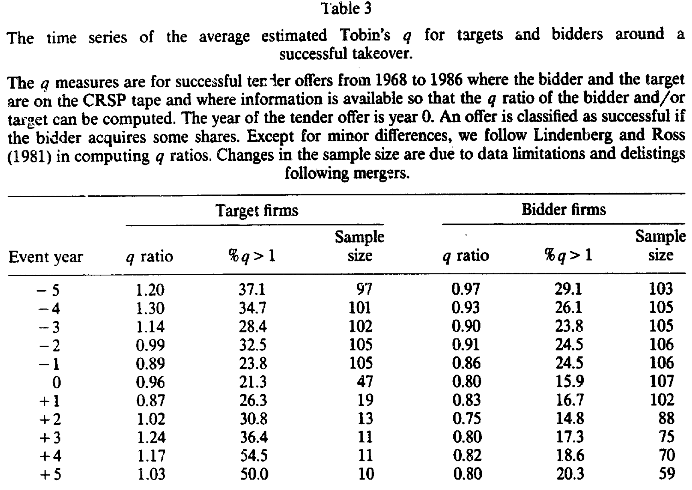
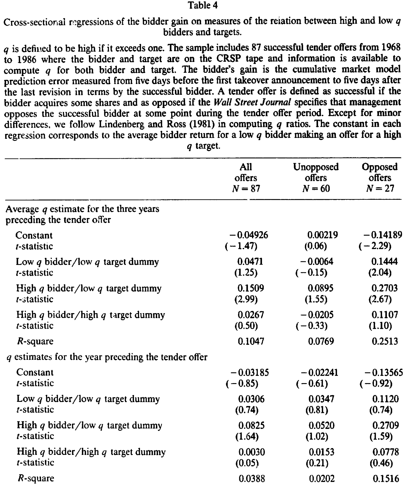
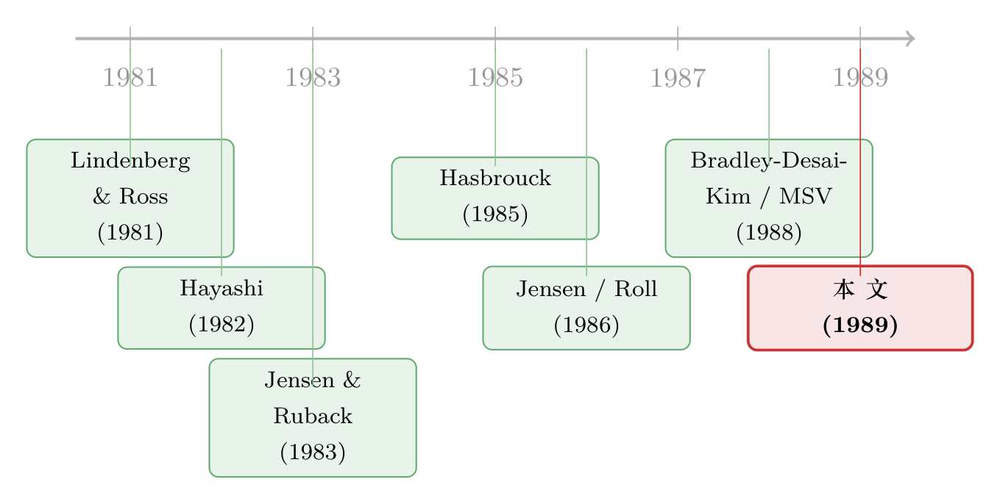

并购的真正赢家：把好经理和坏经理放进同一道乘法里
本文读的是 Lang, Stulz & Walkling (1989, JFE)：在一组成功的要约收购里，高 q 的收购方赚得显著更多，而低 q 的目标公司让出的好处也更多。把收购方和目标的 Tobin's q 当成「管理质量」的代理变量，那么市场奖励的，是「好经理收购坏经理」——高 q 收购方拿下低 q 目标，收购方平均赚逾 10%；反过来，低 q 收购方去买高 q 目标，收购方平均亏逾 4%。
1 一个让人不安的事实
并购研究里有一桩老掉牙、却始终没被讲透的尴尬：目标公司的股东几乎总是赢家，而收购方的股东，常常是输家。
目标方股价在公告日附近跳涨四成,这早已是共识(本文样本里目标的平均超额收益高达 40.3%,t 值 16.91);可收购方呢?平均超额收益是 0.1%,t 值 0.09——一个干净利落的「零」。一桩交易,如果让收购方的股价不升反降,那它的潜台词近乎残忍:这家公司的股东,本来不做这笔收购反而更好。
于是一个自然的问题摆在面前:既然平均下来收购方「白忙一场」,那为什么还有这么多收购方前赴后继?更要紧的是——这个「平均为零」的背后,是不是藏着两群截然不同的公司,一群在赚,一群在亏,只是被平均数抹平了?
这正是 Lang、Stulz 和 Walkling 想撬开的缝。而他们撬缝用的那把螺丝刀,叫 托宾 q (Tobin's q)。
2 把「管理质量」装进一个比值里
托宾 q 的定义朴素到近乎天真:一家公司的市场价值,除以它资产的重置成本 (replacement value)。
$$ q = \frac{\text{market value of the firm}}{\text{replacement value of its assets}} $$
直觉是这样的:如果市场愿意为这家公司付出超过「把它的厂房设备重新买一遍」的价钱(即 q > 1),那一定是因为现任管理层手里的项目、以及人们预期它将来要做的项目,本身就在创造价值——一块钱的资产,在这套管理之下能值一块二。反过来,q < 1 意味着:把资产砸下去,产出的现值还不如资产本身值钱。在没有税收和调整成本的世界里,这等价于说,这家公司手里的边际投资项目是负净现值 (negative NPV) 的。
所以本文的核心赌注,就是这一句:
q 是管理层业绩的一面镜子。 高 q 公司 = 管理得好;低 q 公司 = 管理得差。如果这个映射成立,那么把收购双方的 q 摆在一起,就等于把「谁在收购谁」这件事,翻译成了「好经理 vs. 坏经理」的四种组合。
当然,作者自己也很清楚这面镜子并不完美(论文脚注 4 老老实实承认:q 还受生产技术、实物资产交易成本、以及「市场是否预期控制权会变更」的影响)。但作为一个可观测、可排序的代理变量,q 已经足够好用了。
接着,一个方法论上的选择出现了。q 是个连续变量,你可以直接把它塞进回归;但作者发现,先用 q = 1 这条线把样本一刀切成「高 q」和「低 q」两组,结论反而更显著。原因或许是收益与 q 之间的关系本就不是线性的。于是全文真正的主角,是一张 2×2 的表格:收购方高/低 q × 目标方高/低 q。
3 收购前,他们长什么样?
在动手算收益之前,作者先给收购双方做了个「体检」,而体检报告本身就已经很有故事。
先看横截面的一张快照(收购前一年): 目标公司的平均 q 是 0.845,显著低于 1(t 值 -2.80);收购方的平均 q 是 0.856,同样低于 1(t 值 -1.98)。换句话说,在要约收购里,买家和卖家,平均而言都不是什么「好学生」——双方的 q 都趴在 1 以下。
但真正有意思的,是把时间轴拉开。作者沿着收购公告前后各五年,逐年算 q 的均值(并且特意用不同日历年的样本做平均,好让大盘涨跌的影响互相抵消)。

Table 3
如表 3 所示,目标公司的 q,是在收购前的几年里「跌下来」的:从第 -5 年的 1.20、第 -4 年的 1.30,一路滑到第 -1 年的 0.89。第 -1 年与第 -4 年的配对比较,t 值达到 2.22,统计上显著。典型的目标,不是一家「一直就差」的公司,而是一家曾经不错、近年掉队的公司——这恰恰是「管理层出了问题、该换人了」的画像。
而收购方完全是另一副面孔:它的 q 从第 -5 年的 0.97 到第 -1 年的 0.86,只是缓慢、且不显著地下滑。也就是说,典型的收购方,不是突然变差,而是「常年平庸」——它的投资机会已经差了好些年了。
读到这里,一个不安的念头会冒出来:一家常年低 q 的公司,跑去收购别人,这听上去不像好消息,倒像是「自己地里长不出庄稼,只好去别人地里刨食」。那市场到底奖励谁、惩罚谁?这就要看那张 2×2 的核心结果了。
4 核心一步:把四种组合塞进一个回归
这是全文的枢纽。作者要回答的是:收购方的公告期超额收益,如何随「自己的 q」和「对方的 q」共同变化?
他们用了一个简洁得有点漂亮的设定:一个只有三个虚拟变量加一个常数项的横截面回归。
这里的巧思在于:2×2 一共四种组合,但回归里只放了三个虚拟变量。被「省略」的那一类——低 q 收购方收购高 q 目标,也就是「坏经理去买好经理」——就被吸收进了常数项 α 里。于是每个 β 系数的含义都变得格外清楚:它是相对于「坏经理买好经理」这个基准,某种组合多赚(或少赚)了多少。
作者的理论预期非常明确:如果并购的收益真的来自「好公司接管坏公司」,那么——
- 常数项
α应该是负的:坏经理去买好经理,本就是一桩该被市场扣分的蠢事; β₂(高 q 买低 q)应该是最大、最显著的正数:好经理接管坏经理,是把资源从糟糕的管理里解放出来。

Table 4
表 4 把答案端了上来。用收购前三年的平均 q(作者认为取三年均值能滤掉 q 估计的噪声)、全样本 N = 87:
- 常数项
α = -0.04926(t 值-1.47)。符号如预期为负:坏经理买好经理,收购方平均亏掉约5%。 - 高 q 收购方 / 低 q 目标的系数
β₂ = 0.1509(t 值2.99,在0.01水平显著)。这是四种组合里最大的一个。把它和常数项相加,意味着好经理买坏经理时,收购方平均赚约10%。 - 高 q 收购方 / 高 q 目标
β₃ = 0.0267(t 值0.50),不显著;低 q 买低 qβ₁ = 0.0471(t 值1.25),也不显著。 - 回归的
R² = 0.1047。
于是反转出现了:那个「平均为零」的收购方收益,一旦按 q 拆开,立刻分裂成天壤之别的两群。好经理买坏经理,大赚;坏经理买好经理,大亏。 中间被平均数悄悄抹平的,正是这道 10% 对 -5% 的鸿沟。
作者还顺手做了个更干净的验证:如果不要求目标方 q 可得,样本能扩到 106 个收购方。其中 25 家高 q 收购方,平均超额收益 3.89%(0.10 水平显著);低 q 收购方平均 -1.37%(t 值 -0.89)。两者之差 5.2%,在 0.05 水平显著。 单看收购方自己的 q,就足以把样本切成「一群赚钱、一群亏钱」。
5 收益从哪里来:创造,还是再分配?
到这里还差最后一块拼图。收购方赚了 10% 固然好,但这块钱,是新创造出来的,还是从目标股东兜里转移过来的?
作者的办法是看总收益 (total takeover gain)——收购方与目标方按市值加权的组合超额收益,本文样本里平均为 11.31%(t 值 7.39)。逻辑很干净:
- 如果收购方的盈亏只是和目标方此消彼长,那么组合总收益应该和双方 q 的组合无关——你赚的就是我亏的,加起来不变。
- 但如果收购真的「把饼做大」,那高总收益就应该集中在某些特定的 q 组合上。
结果是后者:总收益最大的,正是高 q 收购方买低 q 目标;总收益最小的,是低 q 收购方买高 q 目标。 这意味着,好经理接管坏经理时,收购方的 10% 不是从目标方挖来的,而是来自双方合并价值的真实增加;反过来,坏经理买好经理时,目标方的收益里,有一部分纯粹是财富从收购方转移到目标方的结果。
这恰好把论文接回了 Jensen 那条著名的主线:自由现金流 (free cash flow)。差公司(低 q)往往会把现金浪费在负 NPV 的投资上,而不肯吐给股东;一桩逼着这种目标去更好地使用现金的收购,就同时让目标和收购方的股东都受益。(关于自由现金流这条主线本身,可参见《现金为什么一定要「还」出去？——四十年后，重读 Jensen 的自由现金流》;而「现金多的收购方为何反被市场扣分」的后续证据,可参见《现金多的公司去并购，市场为什么先扣分？》。)
作者也诚实地留了一道后门:q 也可以被读成「市场对一家公司高估或低估的程度」。那么「总收益最大的收购」也可以被解释成「一个被低估的目标(低 q)被买走了」。换句话说,「管理质量」和「估值偏误」这两套故事,在本文的数据里是观测等价的——q 同时背得动这两种解读。这一点,后文的「评论」里还要再回来谈。
6 文献脉络
把这篇论文放回它的时代,会看得更清楚。
最早的两条河流在 1980 年代初汇合:一边是 Lindenberg & Ross (1981) 提出的、把 Tobin's q 落地为可计算指标的方法(本文的 q 估计正是沿用了他们、并经 Lang & Litzenberger 改良的算法);另一边是 Hayashi (1982)、Summers (1981) 在 q 理论上的奠基,告诉我们 q < 1 在何种条件下对应负 NPV 的边际投资。
接着,公司控制权市场的研究在 1980 年代中后期成熟。Jensen & Ruback (1983) 做了那篇经典综述,确立了「目标赚、收购方未必赚」的基本事实;Roll (1986) 抛出「狂妄假说 (hubris hypothesis)」,提醒人们收购方的损失可能源于经理人的过度自信;而真正点燃本文的,是 Jensen (1986) 的自由现金流理论——它给「为什么差公司该被接管」提供了机制。

方法论上,本文紧贴 Bradley, Desai & Kim (1988) 估计收购收益的做法。而在「目标公司的特征」这条线上,Hasbrouck (1985) 已经发现目标的 q 偏低,Morck, Shleifer & Vishny (1988a, b) 则指出低 q 公司的经理更容易「壕沟自保 (entrenchment)」——这帮本文解释了为什么敌意(opposed)收购里,双方的 q 更低(本文样本中,敌意收购方的 q 仅 0.777,显著低于 1)。
本文的位置,就在这张网的交汇点:它第一次系统地把收购双方的 q 同时纳入分析,并用那个 2×2 的交互结构,把「管理业绩 → 并购收益」这条因果链,落成了可检验的横截面预测。几乎同时独立完成的 Servaes (1988) 是它最近的邻居——但本文用了重置成本、做了通胀调整、且只聚焦要约收购,识别更干净。
7 评论与延伸（Q&A + 研究方向）
(a) 几个可能的疑问
Q：q 真的能代表「管理质量」吗？会不会只是「估值高低」的同义词？
这是全文最大的软肋,作者自己也承认。q 高,既可能因为「经理人能干」,也可能因为「市场把它捧高了」。本文的数据无法把这两种解释分开——它们对所有核心结果给出完全一致的预测。所以严格说,本文证明的是「q 的组合预测并购收益」,而把「这是因为管理质量」当成一个有吸引力但未被证伪的解读。
Q：高 q 收购方赚得多，会不会只是「狂妄假说」反过来——低 q 经理更爱乱收购？
部分是。Roll (1986) 的狂妄假说和本文并不矛盾:本文恰恰发现低 q 收购方(尤其在敌意收购里)赚的是负收益,而「被严密监督的经理本应因做负 NPV 收购而受罚、从而避免它」。低 q 经理仍去收购,本身就可能是壕沟自保或过度自信的征兆。两套理论在这里是互补的。
Q：样本只有 87 对，统计功效够吗？
这是 1989 年数据可得性的硬约束。值得注意的是,最强的那个系数(高 q 买低 q,
0.1509)t 值到了2.99,且在扩展到 106 个收购方的样本里,5.2%的高低 q 之差仍在0.05水平显著。但其余三个组合大多不显著,R²也只有0.10——所以结论的力量集中在「高 q 收购方」这一个角上,不宜过度外推到每一格。
Q：为什么要把 q 切成高/低两组，而不是直接用连续的 q 做回归？
作者两种都做了,但二分法的结果更显著。他们给的理由是「收益与 q 的关系可能非线性」。这其实是个诚实但略显事后的选择:
q = 1这条线有经济学含义(负 NPV 的分界),但具体在哪里切,多少带点数据驱动的味道。
Q：收益是创造还是再分配，本文真的分清了吗？
分得比大多数同期文献清楚,但没分到底。用「市值加权组合总收益」随 q 组合变化来论证「做大了饼」,是个聪明的设计;但总收益本身也可能受「被低估目标被买走」这一估值故事驱动。所以「价值创造」的结论,和 q 的「管理 vs. 估值」二义性是绑在一起的。
Q：目标 q 在收购前五年里下滑，会不会是收购被提前预期、premium 已经打进股价了？
作者在脚注里点破了这个反向担忧:如果收购被部分预期,目标的股价会提前计入收购溢价,这只会让 q 显得偏高——也就是说,真实的 q 下滑只会比观测到的更陡。这个方向的偏误,反而强化了「目标是掉队公司」的结论。
(b) 几个可能的研究问题与提案
1. 把 q 的「管理 vs. 估值」二义性拆开。 【经济故事】本文最大的未解之题,是 q 同时背着两套解释。今天我们有了更多工具:可以用行业内同行的 q 剥离行业层面的估值波动,或用收购后的真实经营改善(ROA、生产率)来检验「管理质量」这条腿——如果高 q 收购方接管低 q 目标后,目标的经营指标真的改善,那「管理」解释就更可信。 【可行性】高。Compustat + 收购样本 + 收购后若干年的经营数据即可。识别难点是「收购后改善」与「均值回归」难分,需配对控制组。
2. 信用市场视角:债权人怎么看 q 的组合? 【经济故事】本文只看股权收益。但「好经理买坏经理、把饼做大」对债权人意味着什么?如果总价值上升、风险下降,目标和收购方的债券利差都该收窄;若是壕沟自保型的低 q 收购,债权人可能反被掏空。 【可行性】中。需要并购双方的公司债二级市场利差(TRACE,但样本期受限于 2002 年后),与 q 数据匹配后样本会缩水。可优先做 1990 年代后的子样本。
3. 外资持有人是不是「更挑 q」的收购方? 【经济故事】跨境并购里,外资收购方往往被质疑「不懂本地、出价过高」。但若把 q 框架搬过来,可以问:外资收购方是否更倾向于「高 q 买低 q」这种创造价值的组合?还是相反?这能给「外资是不是蝗虫」的争论添一块砖。 【可行性】中。需跨国并购数据 + 可比口径的 q(重置成本在跨国语境下难算,得用账面近似)。识别上要控制行业与国别估值差异。
4. q 与流动性:被收购目标的「掉队」是否伴随股票流动性恶化? 【经济故事】目标 q 在收购前五年下滑,如果同时伴随交易流动性的枯竭(换手率下降、价差走阔),那么「掉队公司被接管」就多了一条微观市场的注脚——流动性差本身可能既是管理差的结果,也是收购方能压价的原因。 【可行性】高。CRSP 日度数据可直接构造 Amihud、价差等流动性指标,与 q 的时间序列对齐即可。
参考文献
- Bradley, M., Desai, A., & Kim, E. H. (1988). Synergistic gains from corporate acquisitions and their division between the stockholders of target and acquiring firms. Journal of Financial Economics 21, 3–40.
- Hasbrouck, J. (1985). The characteristics of takeover targets: q and other measures. Journal of Banking and Finance 9, 351–362.
- Hayashi, F. (1982). Tobin's marginal q and average q: A neoclassical interpretation. Econometrica 50, 213–224.
- Jensen, M. (1986). Agency costs of free cash flow, corporate finance, and takeovers. American Economic Review 76, 323–329.
- Jensen, M., & Ruback, R. S. (1983). The market for corporate control: The scientific evidence. Journal of Financial Economics 11, 5–50.
- Lindenberg, E., & Ross, S. (1981). Tobin's q ratio and industrial organization. Journal of Business 54, 1–32.
- Morck, R., Shleifer, A., & Vishny, R. W. (1988). Management ownership and market valuation: An empirical analysis. Journal of Financial Economics 20, 293–317.
- Roll, R. (1986). The hubris hypothesis of corporate takeovers. Journal of Business 59, 197–216.
- Servaes, H. (1988). Tobin's q, agency costs and corporate control: An empirical analysis of firm-specific parameters. Working paper, Purdue University.
- Summers, L. H. (1981). Taxation and corporate investment: A q-theory approach. Brookings Papers on Economic Activity, 67–127.